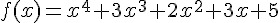

人工智慧 - 採用 JavaScript 實作
目錄
|
下載
陳鍾誠
於
金門大學
問題
問題
電腦程式要具備甚麼樣的能力才算有智慧呢？怎樣才能評判電腦程式的智慧呢？
一張圖片是由一堆「紅綠藍三原色的點」所組成的，例如 (255 0 0) 代表紅色，請問若要辨識該圖片裏有沒有一隻貓，應該怎麼做呢？
當您對麥克風說話時，聲音傳入電腦後，成為一連串的 (振幅) 數字，請問若要知道這串數字代表甚麼話，應該怎麼做呢？
如果您想寫程式找出某個輸入參數 x 的平方根，請問您會怎麼做呢？
 , 如果您想寫程式找出 f(x) 的最小值，請問您會怎麼做呢？